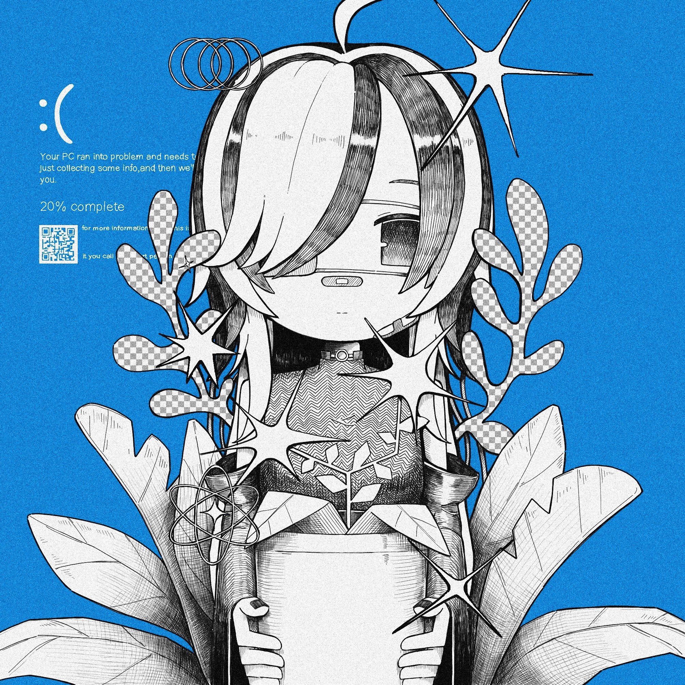

SanneToga


ABOUT ME
- Name
- 兎賀さんね (SanneToga)
- About
-
インターネット領域の端っこにある個人テキストサイト「SanneToga」の管理人です。
ここは個人の記録用としての役割を持っており、日々のことや制作物を置いています。UIよりも長文テキストや作品の集積を目的としています。
_ _
( \/ )
.---(_>_)---.
/ / | \ \
\___\_|_/___/
| |
| |
主なコンテンツは作品一覧や雑記です。
上のリンクから各ページへどうぞ。
画面は見やすいように全画面表示または最大化にてご覧ください。
====================================
管理人について
名前：SanneToga-兎賀さんね
内容：HTMLを手作業で打ち込む日々です。
リンク：ご自由に（index.htmlにお願いします）
------------------------------------
LINK